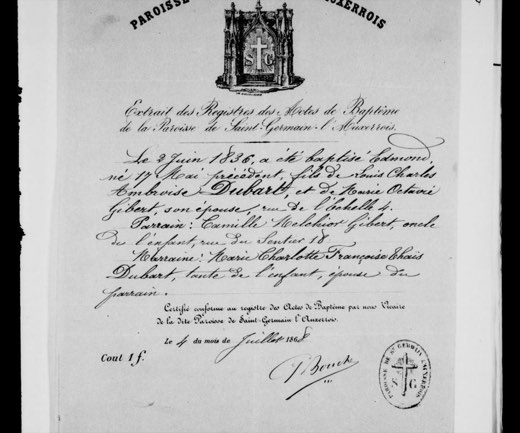
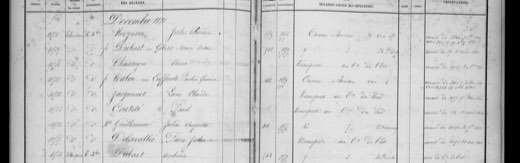

Sosa 9 · Côté Dubart
Marie Octavie Gibert
Née en 1807 à ParisMorte en 1860 à Paris
Arrière-grand-mère de René, côté paternel. Professeur de chant.
Récit
Marie Octavie Gibert est baptisée à Paris, à Notre-Dame-de-Bonne-Nouvelle, le 4 février 1808 : la table des baptêmes de la paroisse inscrit ce jour-là une « Marie Octavie » Gibert. Elle ne nomme pas les parents ; le rapprochement avec la fille de Marin François Gibert et de Catherine Foucamprez repose sur le nom, le prénom composé et la paroisse du couple, et il est probable plutôt que prouvé. Si c'est bien elle, elle est née entre août 1807 et ce début de février 1808, ce qui s'accorde avec l'âge de 52 ans que ses fils déclarent à son décès ; l'acte de baptême, avec son parrain et sa marraine, reste à trouver. Trois arbres en ligne la disent née à Pantin, sans source d'acte, mais l'état civil de Pantin ne compte aucune naissance Gibert pour ces années : la piste est contredite, sans être tout à fait écartée. Elle est fille de Marin François Gibert, « pensionnaire de l'État » qui mourra à la Manufacture des tabacs, et de Catherine Foucamprez, morte en 1827 ; son frère aîné est Camille Melchior, le futur médecin. Elle a 19 ou 20 ans à la mort de sa mère et 21 ou 22 ans à celle de son père, en octobre 1829, environ trois mois après la naissance de son fils Charles. Cadre commun de l'époque : dans le Paris de l'Empire et de la Restauration, un enfant de petit fonctionnaire grandit dans des rues étroites et boueuses, sans trottoirs, et une fille de ce milieu reçoit en général une éducation d'agrément, parfois un peu de musique. Aucun document ne dit ce qu'il en fut pour elle.
Elle épouse Louis Charles Ambroise Dubart, frère de Thaïs, la femme de Camille : les deux familles sont liées deux fois. On ne connaît ce mariage que par les actes de 1860, qui la nomment son épouse. L'acte lui-même est introuvable : il n'est pas dans le fichier des mariages parisiens reconstitué, ni au nom Gibert (1772-février 1841), ni au nom Dubart ; le fichier n'est pas exhaustif, et le mariage a pu avoir lieu hors de Paris ou après la naissance de Charles. Son contrat n'apparaît pas non plus dans l'index des contrats de commerçants d'avril 1829 à juillet 1830, recherche faible. Elle est mère de Charles, né à Paris le 24 juin 1829 (acte rétabli en 1872), et d'Edmond, né le 17 mai 1836. Au baptême d'Edmond à Saint-Germain-l'Auxerrois, la famille demeure 4 rue de l'Échelle ; le parrain est son frère Camille et la marraine sa belle-sœur Thaïs.
Selon l'arbre familial, non vérifié, elle est professeur de chant. Cette mention vient d'une tradition familiale dont on ignore l'origine. La piste a été explorée dans la presse musicale : une « Madame Dubart, professeur de chant », élève du maître Banderali, apparaît à Paris de 1839 à 1846, souvent aux côtés d'un violoncelliste nommé Rignault. Mais ces articles ne donnent ni prénom, ni adresse, ni mari : rien ne prouve qu'il s'agisse d'Octavie. Un indice par élimination la rend possible : d'après le fichier parisien, aucun homme Dubart ne se marie à Paris avant avril 1840, et le seul couple Dubart connu en mars 1839 est celui de Louis et d'Octavie ; c'est un indice faible, car le fichier est incomplet. C'est une hypothèse non résolue, de confiance moyenne depuis la découverte de l'Agenda de 1837, qui n'est pas retenue comme un fait. Un autre indice, d'une autre nature, s'y ajoute : l'Agenda musical de 1837 range parmi les dames professeurs une « Dubart, piano, rue Vivienne, 9 », adresse de la maison de soieries de Louis ; on en infère, avec une confiance moyenne et sans preuve, qu'il s'agirait d'elle, mais la liste ne donne ni prénom ni mari, et c'est du piano, non du chant. Un pharmacien Dubart, rue de Bondy, croisé dans un almanach de 1850, est un homonyme écarté. Aucune « Madame Dubart » chanteuse n'apparaît dans la presse musicale lue de novembre 1860 à 1874, ce qui ne prouve rien dans un sens ni dans l'autre. Cadre commun : une femme mariée qui donne des leçons de chant à des jeunes filles de la bourgeoisie exerce un métier respectable, souvent d'appoint ; cela ne dit rien de la vie réelle d'Octavie.
En 1860, la table des décès de l'Enregistrement l'inscrit sans profession : « femme Dubart, mari employé » ; l'Enregistrement note d'ordinaire l'état d'une femme mariée par celui du mari, et cela ne dit rien de 1839-1848. Aucune succession n'est déclarée pour elle dans cette table. Le 14 juillet 1860, demeurant 35 rue Bleue, elle donne devant Me Achille Descours, notaire (étude CXI), son consentement au mariage de son fils Charles ; l'acte est en brevet et le répertoire ne lui donne aucune profession. Charles, employé, se marie le 26 juillet 1860 ; Edmond se marie en 1868.
Elle meurt le 9 août 1860, à 52 ans, au domicile conjugal, 35 rue Bleue (Paris 9e). Inhumée au cimetière de Montmartre le 11 août 1860, elle est exhumée le 5 décembre 1871 et placée, la veille des obsèques de son mari, dans la concession perpétuelle n° 542. Restent à chercher son acte de naissance, son mariage et son contrat, son testament, et la preuve que la chanteuse de la presse est bien elle, par exemple une adresse de Madame Dubart dans un annuaire ou un faire-part de 1860 [R0069].
Récit rédigé le 13 novembre 2026 à partir de la base, qui fait foi. Chaque marque ouvre la preuve du passage.
Famille
Frères et sœurs
Sa vie dans le temps
- Premier Empire
- Marie Octavie Gibert est née entre le 10/08/1807 et le 04/02/1808 si le baptême du 4 février 1808 est le sien (A0690) — Paris partiellement vérifié
- Marie Octavie Gibert est née entre le 10/08/1807 et le 09/08/1808 (fourchette tirée de l'âge déclaré, 52 ans, au décès du 09/08/1860) — Paris non vérifié
- Trois arbres en ligne de Geneanet (copiant la généalogie de Jacques Robert) placent la naissance de Marie Octavie Gibert à Pantin (Seine) vers 1808 ; un autre à Paris — Pantin contredit
- La table des baptêmes de Notre-Dame-de-Bonne-Nouvelle porte, au n° 63 de l'année 1808, « Gibert, Mᵉ octavie » (Marie Octavie), baptisée le 4 (février) 1808 — Paris vérifié
- Marie Octavie Gibert (P7411), fille de François Marin Gibert et de Marie Catherine Foucamprez, a probablement été baptisée à Notre-Dame-de-Bonne-Nouvelle le 4 février 1808 — Paris partiellement vérifié
- Restauration
- Octavie avait 19 ou 20 ans à la mort de sa mère (14/09/1827) et 21 ou 22 ans à celle de son père (05/10/1829), soit environ trois mois et demi après la naissance de son fils Charles (24/06/1829) — Paris non vérifié
- Charles Dubart naît à Paris (ancien 5e) le 24 juin 1829, fils de Louis Charles Ambroise Dubart et de Marie Octavie Gibert, son épouse ; l'acte rétabli en 1872 ne dit rien d'autre — Paris partiellement vérifié
- Monarchie de Juillet
- Edmond Dubart, né le 17 mai 1836, est baptisé le 2 juin 1836 à Saint-Germain-l'Auxerrois ; ses parents Louis Charles Ambroise Dubart et Marie Octavie Gibert demeurent 4 rue de l'Échelle ; parrain : son oncle Camille Melchior Gibert (rue du Sentier 18) ; marraine : sa tante Marie Charlotte Françoise Thaïs Dubart, épouse du parrain — Paris vérifié
- Second Empire
- Aucune déclaration de succession, aucun inventaire ni aucune vente de meubles ne sont portés pour Octavie dans la table du 8e bureau (page de droite vide à la ligne 289) — Paris vérifié
- Le 14/07/1860, Marie Octavie Gibert, épouse de Louis Charles Ambroise [Dubart], demeurant à Paris rue Bleue n° 35, donne devant Me Achille Descours (étude CXI) son consentement au mariage de son fils Charles ; acte n° 604 du répertoire, en brevet, enregistré le 16 juillet (droits 2,20 F) — Paris vérifié
- Charles Dubart, employé, né à Paris (ancien 5e) le 24/06/1829, fils de Louis Charles Ambroise Dubart et de Marie Octavie Gibert, épouse le 26/07/1860 à Paris 9e Mathilde Émilie Tissot (née 14/11/1831, Paris ancien 3e, fille de feu André Tissot et feue Héloïse Adélaïde Hamard), sans contrat de mariage ; le père présent et consentant, la mère ayant consenti par acte notarié du 14/07/1860 — Paris vérifié
- Marie Octavie Gibert, épouse de Louis Charles Ambroise Dubart, meurt le 9 août 1860 à midi et demi au domicile conjugal, 35 rue Bleue (Paris 9e), âgée de 52 ans, née à Paris — Paris vérifié
- En 1860, la table des décès de l'Enregistrement inscrit Octavie sans profession propre : « Gibert, Marie Octavie, f[emm]e Dubart, mari employé, 35 [rue] Bleue, 52 ans, [décédée le] 9 août [1860], mariée » — Paris vérifié
- Marie Octavie Gibert est fille de Marin François Gibert et de Catherine Foucampré (Foucamprez) : elle est donc sœur du Dr Camille Melchior Gibert (AG19) — Paris vérifié
- Marie Octavie Gibert, épouse Dubart, est inhumée le 11 août 1860 au cimetière de Montmartre (sépulture « 59 » [?], non perpétuelle), puis exhumée le 5 décembre 1871 et placée dans la concession perpétuelle n° 542 — Paris vérifié
- Le 9 juillet 1868, à la mairie du 9e, Edmond Dubart, employé, 32 ans, né Paris 1er le 17/05/1836, demeurant 104 rue du Faubourg-Poissonnière avec son père, épouse Marie Félicie Rignault, 21 ans, née Paris 3e en janvier 1847, demeurant rue Pigalle 34 avec son père Jean Louis Alexandre Rignault, artiste musicien (mère Adèle Félicie Bosse, décédée) ; contrat devant Me Huillier (lecture corrigée le 03/11/2026, A0548) le 7/07/1868 ; témoins : Joseph Éléonor Pressat [?], docteur en médecine ; Pierre Valton, ancien avocat au Conseil d'État ; Philippe Hébert, agent de change ; Pierre Hubert Cary, négociant — Paris vérifié
- Troisième République
- Le 6 décembre 1871, Louis Charles Ambroise (« Ambroise ») Dubart est inhumé au cimetière de Montmartre dans la concession perpétuelle n° 542 (1871), 9e division, où sa femme Marie Octavie Gibert, exhumée de sa sépulture du 11 août 1860 dans le même cimetière, a été placée la veille (5 décembre 1871) — Paris vérifié
- Charles DUBART est le fils de Louis Charles Ambroise DUBART et de Marie Octavie GIBERT (décédés en 1890). — Paris vérifié
- Edmond DUBART est le fils de Charles Ambroise DUBART (sans « Louis » dans l'acte) et de Marie Octavie GIBERT, décédés. — Paris vérifié
Lieux
Documents (27)






Autres sources citées
- Table des baptêmes de Notre-Dame-de-Bonne-Nouvelle, 1797-1819 (libellé Geneanet « Tables décennales (Naissances) ») Registre paroissial · Archives de Paris (numérisation Geneanet) · D6J 3196
- Pantin, tables décennales des naissances, des mariages et des décès, 1792-1832 (PAN 18W85) : table des naissances 1803-1812, vue 26 (lettres F-G-H) Acte d'état civil · Archives départementales de la Seine-Saint-Denis · PAN 18W85 (AD093EC_NUM_000688)
- Table des baptêmes de Notre-Dame-de-Bonne-Nouvelle, 1797-1819 (libellé Geneanet « Tables décennales (Naissances) »), vues 107-114 relues à fort grossissement : n° 63 de 1808, « Gibert, Mᵉ octavie », 4 février Registre paroissial · Archives de Paris (numérisation Geneanet) · D6J 3196
- Agenda musical pour l'année 1837 (« contenant les noms et demeures » des artistes), rubrique « DAMES PROFESSEURS. Piano, Harpe, Guitare, Solfège, Chant, Harmonie », p. 195 imprimée Annuaire, almanach · BnF, Gallica
- Déclaration de Jessica (03/11/2026) : la profession « professeur de chant » d'Octavie vient de la famille ; on ne sait pas comment l'information a été obtenue Document de famille
- Geneanet, recherche « GIBERT Octavie » (Paris, 1805-1810) et arbre xpicsou3 : Marie Octavie GIBERT, née vers 1808 à Pantin Arbre généalogique · Geneanet
- Décès de Charles DUBART, Paris 17e arr., 26/06/1890 (acte dressé le 27/06/1890) Acte d'état civil · Archives de Paris · V4E 7490
- Décès d'Edmond DUBART, Paris 14e arr., 10/05/1903 (acte dressé le 12/05/1903) Acte d'état civil · Archives de Paris · 14D 202
- Transcription au 9e arr. (26/06/1903) de l'acte de décès d'Edmond DUBART Acte d'état civil · Archives de Paris · 9D 97
- Revue et gazette musicale de Paris, n° du 24/03/1839 : « Madame Dubart et M. Deshayes » (H. Blanchard) Presse · Internet Archive (numérisation d'un volume imprimé) · revueetgazettemu18396pari, djvu.txt l. 17159-17187
- Le Ménestrel, volume 1837-1843 (étiqueté « 1833 » par l'Archive) : mentions de Mme Dubart, 1839-1843 Presse · Internet Archive · lemnestrel26810pari, djvu.txt l. 35840 à 127520
- Revue et gazette musicale de Paris, vol. 1846 : soirée Dubart-Manera (début 1846) Presse · Internet Archive · revueetgazettemu1846pari, l. 8865-8880
- Notices SIV : notaire Achille Descours (FRAN_NP_012407, étude CXI, 25/07/1846-11/09/1860, 1 rue de Provence) ; minutes Huillier (FRAN_IR_041232, MC/ET/VI/1220) Inventaire d'archives · Archives nationales (SIV) · FRAN_NP_012407 ; FRAN_IR_043312 ; FRAN_IR_041232
- Répertoire de l'étude CXI (Descours puis Marcq), 9 juillet-environ 2 novembre 1860, parcouru pour un inventaire Dubart/Gibert Acte notarié · Archives nationales, Minutier central · MC/RE/CXI/18
- Le Ménestrel v. 28-40 (nov. 1860-1874) et Revue et gazette musicale 1850, 1853, 1854, 1861-1872 : textes OCR complets lus (recherche Dubart et variantes) ; Annuaire des artistes (Lacroix) 1860-1862 Presse · Internet Archive
- Gazette des tribunaux, échantillon de 20 numéros (6/10/1843-26/01/1844, 10/01/1845), couche texte des PDF Presse · ENAP
Ce qu'on ignore
Hypothèse : la « Madame Dubart, professeur de chant » de la presse musicale parisienne (1839-1848) est Marie Octavie Gibert, épouse de Louis Charles Ambroise Dubart
non résolu Ne pas fusionner avec P7411 ; ne pas écrire de biographie sur cette base. Test : adresse de Mme Dubart dans un Bottin ou faire-part de décès d'août 1860 dans le Ménestrel. Indices rassemblés le 03/11/2026 (aucun ne tranche) — POUR : même nom, ville et période ; Mme Dubart apparaît avec un Rignault (violoncelliste) neuf fois en 1839-1846 (A0496, A0527) et Edmond Dubart, fils de Marie Octavie Gibert selon son acte de naissance de 1836, épouse en 1868 Marie Félicie Rignault, nièce probable d'Émile Rignault (A0520 hypothèse) ; Banderali est à Paris dès 1828, donc une formation auprès de lui est possible pendant le mariage (1828 ou après, A0518), mais cela ne dit rien d'Octavie ; l'adresse rue Chabannais 1 (mars 1843, A0523, à confirmer sur l'image) n'est reliée à aucune adresse connue du ménage Dubart (rue de l'Échelle 4 en 1836, rue Bleue). CONTRE : « Dubart » n'est pas un nom rare ; les articles ne donnent ni prénom, ni mari, ni enfant ; aucune pièce Rignault ou Dubart-Gibert ne nomme Mme Dubart ni un Gibert (A0539) ; aucune pièce de documents-famille-robert ne donne de profession à Octavie (R0173) ; Mlle Gibert introuvable avant 1829 dans la presse musicale lue (R0168) ; le lien Rignault-Dubart peut s'expliquer par la seule famille Rignault (milieu musical étroit). Ajout du 03/11/2026 — POUR : la mention de l'arbre vient d'une tradition familiale (A0545) ; aucun homme Dubart ne se marie à Paris avant avril 1840 d'après le fichier reconstitué (A0543, A0544). CONTRE ou neutre : en 1860, l'Enregistrement ne lui donne aucune profession (A0540) ; pas de succession déclarée (A0541). · A0497
Le mariage de Louis Charles Ambroise Dubart et de Marie Octavie Gibert n'est pas dans le fichier des mariages reconstitués de Paris, ni au nom Gibert (fiches 1772-février 1841), ni au nom Dubart (liasse entière)
recherche infructueuse fichier non exhaustif ; mariage non reconstitué après 1871, ou célébré hors de Paris · A0542
Aucun inventaire après décès au nom de Dubart ou de Gibert dans les répertoires de l'étude CXI du 9/07 au 11/09/1860 (Descours) ni du 12/09 à environ le 2/11/1860 (Marcq)
recherche infructueuse concorde avec la table de l'Enregistrement (A0541 : aucun inventaire enregistré) sans le prouver · A0549
Aucune séparation de biens ni autre mention Dubart dans un échantillon de 20 numéros de la Gazette des tribunaux (octobre 1843-janvier 1845)
recherche infructueuse · A0552
Le baptême (ou la naissance) de Marie Octavie Gibert, entre le 10/08/1807 et le 09/08/1808, n'est pas retrouvé : table des baptêmes de Notre-Dame-de-Bonne-Nouvelle (D6J 3196) parcourue en partie et à faible résolution, index « Noms » de Geneanet sans acte
contredit Absence non établie ; même une entrée de la table ne donnerait que le prénom et la date du baptême (liste chronologique sans parents) [Corrigé le 09/11/2026 (suite) : relecture à fort grossissement de D6J 3196 vues 107-114 : entrée « Gibert, Mᵉ octavie » au n° 63 de 1808, baptisée le 4 février 1808 (A0689, A0690) ; la table n'avait pas été lue assez finement en F34.] · A0687
Trois arbres en ligne de Geneanet (copiant la généalogie de Jacques Robert) placent la naissance de Marie Octavie Gibert à Pantin (Seine) vers 1808 ; un autre à Paris
contredit Origine de « Pantin » inconnue (peut venir de la même tradition familiale) [Contredit le 09/11/2026 : aucune naissance Gibert à la table des naissances de Pantin 1803-1812 (A0692) et baptême à Notre-Dame-de-Bonne-Nouvelle, à Paris, le 4 février 1808 (A0689, A0690) ; non réfuté : un baptême à Paris n'exclut pas formellement une naissance à Pantin.] · A0688
Aucune naissance Gibert, Gilbert, Guibert ni Guilbert n'est inscrite à la table décennale des naissances de Pantin (an XI-1812), section G
recherche infructueuse Seule la vue 26 (F-G-H) a été lue ; les registres d'actes 1807-1808 n'ont pas été ouverts ; ne prouve pas que la naissance ait eu lieu à Paris · A0692
Actes parisiens de la branche Gibert (décès d'Octavie Gibert 1860, de Camille Melchior Gibert 1866, mariage Gibert × Dubart 1828) : consultables en ligne ?
archives inaccessibles · 2026-10-30 — Site des Archives de Paris fermé « par mesure de précaution » après une alerte de cybersécurité (page de maintenance) ; aucun acte consulté Pistes : Réessayer plus tard ; décès 1860 (9e) et 1866 en priorité : les actes parisiens postérieurs à 1860 nomment les parents du défunt · R0069
Octavie Gibert est-elle citée comme « professeur de chant » dans la presse musicale et les annuaires accessibles ?
partiel · 2026-11-02 — Une « Mme Dubart, professeur de chant, élève de Banderali » est attestée à Paris 1839-1848 (AP01-AP05), mais sans prénom ni adresse : identification avec Octavie non établie (AP06) Pistes : Bottin et Annuaire des artistes (Gallica, navigateur) ; Ménestrel août 1860 (décès) ; partitions dédiées à Mme Dubart (BnF) ; Revue 1836 et Ménestrel après 1843 non lus · R0140
Acte de naissance (ou baptême) de Marie Octavie Gibert, août 1807-août 1808
archives inaccessibles · 2026-11-02 — Non établi. La recherche dans le fichier de l'état civil reconstitué de Paris exige un navigateur ; aucun registre ouvert Pistes : Fichier V3E/N au nom Gibert (1807-1808), actes 5Mi1, tables décennales 1802-1812 des anciens 3e/5e/6e arr. · R0142
Acte de mariage et contrat de Louis Charles Ambroise Dubart et de Marie Octavie Gibert
archives inaccessibles · 2026-11-02 — Non établi. La session 11 avait lu la liasse « Dubart » sans trouver la fiche ; il faut chercher au nom de l'épouse Pistes : Fichier V3E/M au nom Gibert (1828-1829) ; Minutier central (répertoires Gibert/Dubart 1828-1829) · R0143
Notaire et acte du consentement du 14/07/1860 ; testament ; succession 1860
infructueuse · 2026-11-02 — Aucun résultat sur un notaire « Descours » de Paris en 1860 (nom lu « Me Descours » avec doute en G11). Testament et succession non cherchés faute d'accès Pistes : Relire le nom du notaire sur l'image de l'acte 677 (9e, 1860) ; Minutier central ; table des successions DQ7 (9e bureau 1860) · R0144
Gallica, Retronews, Google Books : recherche de Mme Dubart / Octavie Gibert
archives inaccessibles · 2026-11-02 — Non consultables le 02/11/2026 (403, JavaScript, quota) Pistes : Refaire à la session principale avec navigateur · R0145
Testament, inventaire après décès, relations avec Camille et Thaïs, sépulture de 1860 (registre d'inhumation de Montmartre)
en cours · 2026-11-02 — Non tentée : pas d'accès aux registres Pistes : Archives de Paris (registres d'inhumation 1860, table des successions 9e) ; documents de la famille Robert · R0147
Naissance de Marie Octavie Gibert entre le 10/08/1807 et le 09/08/1808 dans le fichier des naissances reconstituées
infructueuse · 2026-11-02 — Aucune fiche Octavie / Marie Octavie Gibert. Fichier non exhaustif ; l'absence ne prouve pas l'absence d'acte. Pistes : Tables décennales 1802-1812 (anciens arr. 3e/5e/6e) ; graphies Gilbert/Guibert ; naissance hors Paris ; acte de décès de Marin François Gibert (1829) pour l'âge de ses enfants · R0159
Octavie : succession 1860, acte de décès, registre d'inhumation 1860, contrat de mariage, notaire de 1860
archives inaccessibles · 2026-11-02 — Accès aux Archives de Paris coupé (403) avant ces recherches ; Minutier central non tenté Pistes : Table des décès 8e bureau (9e et 20e arr.) DQ8 1922 (avril 1861 -) et volume 1860 ; Minutier central (salle des inventaires virtuelle) ; registres d'inhumation Montmartre août 1860 · R0164
Mariage religieux ou civil Dubart × Gibert de 1828-1829 par recherche au nom de l'épouse
en cours · 2026-11-02 — Non tentée de nouveau Pistes : Registres paroissiaux 1828-1829 (Saint-Eustache, Saint-Vincent-de-Paul, Notre-Dame-de-Lorette) · R0165
« Mlle (Octavie) Gibert » chanteuse, pianiste ou élève avant le mariage (1815-1829)
infructueuse · 2026-11-03 — Aucune occurrence ; homonymes écartés (A0521). Les Revues de 1815-1835 (Fétis), le Journal de Paris, la Gazette de France, le Courrier des spectacles et les distributions de prix du Conservatoire n'ont pas été lus (volumes non repérés sur IA ou Gallica bloquée) Pistes : Revue musicale (Fétis) 1827-1835 ; Gallica/Retronews ; Archives nationales AJ/37 (registres d'élèves) ; Annuaire dramatique · R0168
Une pièce de documents-famille-robert (copies de la famille) donne-t-elle une profession à Octavie Gibert ?
infructueuse · 2026-11-03 — Non établi : aucune pièce lue ne donne de profession à Octavie ; l'acte de 1860 n'en indique aucune (« épouse de Louis Charles Ambroise Dubart, employé »). Seule la profession d'artiste musicien (Jean Louis Alexandre Rignault, acte de 1868) apparaît, sans lien avec Octavie. Fichiers mal nommés : « D Gibert Camille 1828.jpg » n'est pas un décès mais la fiche d'index du mariage de Saint-Eustache du 4/10/1828 (adresse lue « 40 de Cléry ») ; « N Dubart Edouard 1836 acte/registre » concerne Édouard Jean René Dubart, né le 9/01/1900 (acte du 20/01/1900, Paris 2e), fils de Léon Dubart et de Jeanne Augustine Baron Marchal, non une naissance de 1836. Divergences de lecture : l'acte de mariage de 1828 est lu « rue de Cléry n° 40 » pour Camille (A0230 : 41) et donne sa naissance « premier floréal an cinq (dix-huit avril 1797) », alors que l'acte de naissance de 1797 (A0511) est du 1er fructidor an V (18 août) : lecture à reprendre sur l'image Pistes : Pièces non lues : jugements-notaires, recensements, militaire, faire-part, photos ; test dans l'arbre Heredis (note de P7411) ou question à Jessica (pièce non numérisée ?) ; image de l'acte de 1828 (adresse et date de naissance de Camille) · R0173
Lien explicite Rignault / Dubart-Gibert avant 1868 (témoin, voisin, élève, locataire)
infructueuse · 2026-11-03 — aucun ; adresses disjointes Pistes : contrat de mariage 07/07/1868 (Me Mouillin [?]) ; contrat Rignault-Bosse 1844 ; registre Sainte-Élisabeth 1844 · R0177
Succession et inventaire après décès d'Octavie (1860)
infructueuse · 2026-11-03 — aucune déclaration ni inventaire portés dans la table du 8e bureau Pistes : répertoire du notaire Descours (1860) ; succession de Louis (1871) · R0181
Mariage Dubart × Gibert d'Octavie dans le fichier des mariages reconstitués, au nom Gibert
infructueuse · 2026-11-03 — aucune fiche de 1772 à février 1841 ; seule celle de Camille × Thaïs (1828) Pistes : mariage hors de Paris (lieu d'origine des Dubart : Le Quesnel, Somme ?) ; contrat de mariage (Minutier central) ; publications de bans · R0182
D'où vient la mention « professeur de chant » de l'arbre ?
partiel · 2026-11-03 — tradition familiale, mode d'obtention inconnu Pistes : demander aux membres de la famille Robert qui l'a transmise et depuis quand · R0184
Qui est « Me Descours » et le consentement d'Octavie (14/07/1860) donne-t-il sa profession ?
partiel · 2026-11-03 — Achille Descours, étude CXI ; acte en brevet, sans minute ; le répertoire ne donne aucune profession Pistes : pièces annexes du mariage n° 677 (9e, 1860) aux Archives de Paris, où l'original du brevet a dû être déposé · R0185
Inventaire après décès d'Octavie chez Descours ou Marcq (1860)
infructueuse · 2026-11-03 — rien du 9/07 à environ le 2/11/1860 Pistes : Marcq novembre-décembre 1860 (MIC02707-02715) · R0186
Séparation de biens Dubart × Gibert (1843-1860) ?
infructueuse · 2026-11-03 — rien dans un échantillon de 20 numéros ; pas de recherche plein texte accessible Pistes : Retronews ; jugements de séparation de biens du tribunal civil de la Seine (Archives de Paris, fonds judiciaires) · R0191
Les pièces annexes du mariage de Charles Dubart (9e, n° 677, 1860), où a dû être déposé le brevet de consentement d'Octavie, sont-elles conservées ?
infructueuse · 2026-11-03 — aucune série de pièces annexes antérieure à 1923 n'est signalée aux Archives de Paris ; rien en ligne Pistes : question écrite aux Archives de Paris (pièces annexes 1860, 9e arrondissement) ; papiers de famille des descendants de Charles · R0193
Baptême ou naissance de Marie Octavie Gibert (10/08/1807-09/08/1808) : tables et registres de NDBN, index Geneanet
partiel · 2026-11-09 — Table NDBN D6J 3196 vues 105-110 regardées à faible résolution, vues 111-122 non regardées ; index Geneanet : 4 arbres seulement, dont 3 donnent Pantin (A0687, A0688). Non trouvé, non établi. Pistes : Lire D6J 3196 vues 107-122 avec fort grossissement ; tables des baptêmes de Saint-Laurent (D6J 2567), Saint-Eustache (D6J 2101) ; état civil de Pantin 1807-1808 (AD 93) · R0254
Naissance de Marie Octavie Gibert à Pantin (piste des arbres en ligne, A0688) : état civil de Pantin, table décennale des naissances 1803-1812
infructueuse · 2026-11-09 — Aucun Gibert, Gilbert, Guibert ni Guilbert à la section G de la table des naissances de Pantin 1803-1812 (vue 26 de PAN 18W85) (A0692). La piste Pantin n'est pas confirmée ; A0688 contredit (avec le baptême parisien A0690) mais non réfutée. Pistes : Registre d'actes de Pantin 1807-1808 (inutile sans entrée à la table, sauf erreur de classement) ; origine de « Pantin » dans la tradition de Jacques Robert ; naissance éventuelle d'un proche à Pantin · R0256
Mariage Louis Charles Ambroise Dubart × Marie Octavie Gibert (1828-1829) : contrat dans les inventaires des notaires de Paris (Archives nationales, salle de lecture virtuelle) : recherche par nom du client Dubart, puis Gibert, intervalle 1828-1829, élargi ensuite
infructueuse · 2026-11-09 — Aucun contrat de mariage Dubart × Gibert trouvé dans les inventaires indexés, en 1828-1829 puis intervalle élargi. Une absence dans l'index ne prouve pas l'absence de l'acte ; le notaire de 1828-1829 reste inconnu (aucun notaire associé à ce mariage dans la base). Pistes : Variantes d'orthographe (Dubard, Dubar, Gilbert, Guibert) ; recherche par date seule (1828, 1829) dans la liste des contrats ; relevé des contrats de commerçants (MC/CM/1) déjà négatif (A0550) ; recherche par notaire une fois identifié (témoins, mention marginale, pièce familiale) · R0257
Qui parle de Madame (Octavie) Dubart dans Le Ménestrel après sa mort (9 août 1860) : notice de décès, profession (« professeur de chant ») ?
infructueuse · 2026-11-09 — Aucune mention de Dubart, Gibert ni Octavie dans les numéros consultés : pas de notice de décès ni de profession dans ces numéros. Un silence de la presse ne prouve pas l'absence de notice (OCR, pages non lues, autres numéros). Pistes : Numéros suivants (2 et 9 septembre 1860) ; autres journaux musicaux 1860 (Revue et gazette musicale) ; annonces de leçons de chant de Mme Dubart avant 1860 ; OCR à relire sur la page image pour les variantes de nom ; Ménestrel 1839-1848 pour PN0061 · R0258
D'où vient la mention « professeur de chant » d'Octavie Gibert dans l'arbre, et qui l'a transmise ?
infructueuse · 2026-11-09 — La famille Robert ne sait plus d'où vient la mention « professeur de chant » ; aucune source ni date de transmission. La profession reste une tradition familiale non vérifiée (A0545). Pistes : Aucune piste familiale restante identifiée ; à reprendre seulement si un document familial (lettre, faire-part, carte) est retrouvé · R0259
Mentions de Madame Dubart ou d'Octavie Gibert dans Le Ménestrel de septembre 1860 (2 et 9 septembre) : notice de décès ou profession
infructueuse · 2026-11-09 — Aucune mention de Dubart, Gibert ni Octavie dans le Ménestrel de septembre 1860 consulté ; avec R0258, aucune notice de décès ni profession dans les numéros d'août-septembre 1860 consultés. Cohérent avec A0551 (absence de Mme Dubart dans le Ménestrel de 1860 à 1874). Pistes : Revue et gazette musicale de 1860 (non lue) ; à réouvrir seulement si une date ou une source nouvelle apparaît · R0260
Continuer l'exploration
Dossier complet : toutes les informations et leurs sources
Sosa 9.
Biographie
Récit rédigé le 2026-11-13 à partir de la base, qui fait foi. Les crochets renvoient aux assertions (onglet Toutes les informations).
Marie Octavie Gibert est baptisée à Paris, à Notre-Dame-de-Bonne-Nouvelle, le 4 février 1808 : la table des baptêmes de la paroisse inscrit ce jour-là une « Marie Octavie » Gibert. Elle ne nomme pas les parents ; le rapprochement avec la fille de Marin François Gibert et de Catherine Foucamprez repose sur le nom, le prénom composé et la paroisse du couple, et il est probable plutôt que prouvé. Si c'est bien elle, elle est née entre août 1807 et ce début de février 1808, ce qui s'accorde avec l'âge de 52 ans que ses fils déclarent à son décès ; l'acte de baptême, avec son parrain et sa marraine, reste à trouver [A0689, A0690, A0691, A0499, A0236]. Trois arbres en ligne la disent née à Pantin, sans source d'acte, mais l'état civil de Pantin ne compte aucune naissance Gibert pour ces années : la piste est contredite, sans être tout à fait écartée [A0688, A0692]. Elle est fille de Marin François Gibert, « pensionnaire de l'État » qui mourra à la Manufacture des tabacs, et de Catherine Foucamprez, morte en 1827 ; son frère aîné est Camille Melchior, le futur médecin [A0237]. Elle a 19 ou 20 ans à la mort de sa mère et 21 ou 22 ans à celle de son père, en octobre 1829, environ trois mois après la naissance de son fils Charles [A0500]. Cadre commun de l'époque : dans le Paris de l'Empire et de la Restauration, un enfant de petit fonctionnaire grandit dans des rues étroites et boueuses, sans trottoirs, et une fille de ce milieu reçoit en général une éducation d'agrément, parfois un peu de musique. Aucun document ne dit ce qu'il en fut pour elle.
Elle épouse Louis Charles Ambroise Dubart, frère de Thaïs, la femme de Camille : les deux familles sont liées deux fois. On ne connaît ce mariage que par les actes de 1860, qui la nomment son épouse [A0236]. L'acte lui-même est introuvable : il n'est pas dans le fichier des mariages parisiens reconstitué, ni au nom Gibert (1772-février 1841), ni au nom Dubart ; le fichier n'est pas exhaustif, et le mariage a pu avoir lieu hors de Paris ou après la naissance de Charles [A0542]. Son contrat n'apparaît pas non plus dans l'index des contrats de commerçants d'avril 1829 à juillet 1830, recherche faible [A0550]. Elle est mère de Charles, né à Paris le 24 juin 1829 (acte rétabli en 1872), et d'Edmond, né le 17 mai 1836 [A0256, A0257]. Au baptême d'Edmond à Saint-Germain-l'Auxerrois, la famille demeure 4 rue de l'Échelle ; le parrain est son frère Camille et la marraine sa belle-sœur Thaïs [A0257].
Selon l'arbre familial, non vérifié, elle est professeur de chant [AR0094]. Cette mention vient d'une tradition familiale dont on ignore l'origine [A0545]. La piste a été explorée dans la presse musicale : une « Madame Dubart, professeur de chant », élève du maître Banderali, apparaît à Paris de 1839 à 1846, souvent aux côtés d'un violoncelliste nommé Rignault [A0497]. Mais ces articles ne donnent ni prénom, ni adresse, ni mari : rien ne prouve qu'il s'agisse d'Octavie. Un indice par élimination la rend possible : d'après le fichier parisien, aucun homme Dubart ne se marie à Paris avant avril 1840, et le seul couple Dubart connu en mars 1839 est celui de Louis et d'Octavie ; c'est un indice faible, car le fichier est incomplet [A0544]. C'est une hypothèse non résolue, de confiance moyenne depuis la découverte de l'Agenda de 1837, qui n'est pas retenue comme un fait [A0497]. Un autre indice, d'une autre nature, s'y ajoute : l'Agenda musical de 1837 range parmi les dames professeurs une « Dubart, piano, rue Vivienne, 9 », adresse de la maison de soieries de Louis ; on en infère, avec une confiance moyenne et sans preuve, qu'il s'agirait d'elle, mais la liste ne donne ni prénom ni mari, et c'est du piano, non du chant [A0798]. Un pharmacien Dubart, rue de Bondy, croisé dans un almanach de 1850, est un homonyme écarté [A0501]. Aucune « Madame Dubart » chanteuse n'apparaît dans la presse musicale lue de novembre 1860 à 1874, ce qui ne prouve rien dans un sens ni dans l'autre [A0551]. Cadre commun : une femme mariée qui donne des leçons de chant à des jeunes filles de la bourgeoisie exerce un métier respectable, souvent d'appoint ; cela ne dit rien de la vie réelle d'Octavie.
En 1860, la table des décès de l'Enregistrement l'inscrit sans profession : « femme Dubart, mari employé » ; l'Enregistrement note d'ordinaire l'état d'une femme mariée par celui du mari, et cela ne dit rien de 1839-1848 [A0540]. Aucune succession n'est déclarée pour elle dans cette table [A0541]. Le 14 juillet 1860, demeurant 35 rue Bleue, elle donne devant Me Achille Descours, notaire (étude CXI), son consentement au mariage de son fils Charles ; l'acte est en brevet et le répertoire ne lui donne aucune profession [A0546, A0239]. Charles, employé, se marie le 26 juillet 1860 ; Edmond se marie en 1868 [A0239, A0258].
Elle meurt le 9 août 1860, à 52 ans, au domicile conjugal, 35 rue Bleue (Paris 9e) [A0236]. Inhumée au cimetière de Montmartre le 11 août 1860, elle est exhumée le 5 décembre 1871 et placée, la veille des obsèques de son mari, dans la concession perpétuelle n° 542 [A0255, A0254]. Restent à chercher son acte de naissance, son mariage et son contrat, son testament, et la preuve que la chanteuse de la presse est bien elle, par exemple une adresse de Madame Dubart dans un annuaire ou un faire-part de 1860 [R0069].
Faits clés
- Naissance : 1807-08/1808-02, Paris — partiellement vérifié, déduit [A0691]
- Parents : Marin François GIBERT (P8800) et Marie Catherine FOUCAMPREZ (P8802) — vérifié [A0237]
- Mariage : avec Louis Charles Ambroise DUBART (P5761) — 1772 à 1841, Paris — recherche infructueuse [A0542]
- Décès : 09/08/1860, Paris 9e, rue Bleue 35 — vérifié [A0236]
- Inhumation : 06/12/1871, Paris, cimetière de Montmartre — vérifié [A0254]
Versions divergentes (voir Toutes les informations) : naissance AR0095, A0499, A0688, A0692 ; inhumation AR0097, A0255.
Famille
Liens tirés des assertions de la base ; le statut de chaque lien est celui des assertions citées. Les proches plus éloignés sont calculés à partir de ces liens directs.
Parents
- Marin François GIBERT (P8800) [A0237 vérifié, A0500 non vérifié, AR0190 non vérifié]
- Marie Catherine FOUCAMPREZ (P8802) [A0237 vérifié, A0500 non vérifié, AR0190 non vérifié]
Conjoint(s)
- Louis Charles Ambroise DUBART (P5761) — mariage 1772 à 1841 [A0236 vérifié, A0540 vérifié, A0542 recherche infructueuse, A0546 vérifié, A0550 recherche infructueuse, A0552 recherche infructueuse]
Enfants
- Edmond DUBART (P5232) [A0257 vérifié, A0258 vérifié, A0384 vérifié, AR0181 non vérifié]
- Charles Alfred DUBART (P5762) [A0239 vérifié, A0256 partiellement vérifié, A0376 vérifié, AR0180 non vérifié]
Frères et sœurs
- Camille Melchior GIBERT (P8808) [A0231 vérifié, A0237 vérifié, A0500 non vérifié, A0512 vérifié, A0560 vérifié, AR0189 non vérifié, AR0190 non vérifié]
Proches et alliés (calculés)
Grands-parents
- Adrien FOUCAMPREZ (PN0065) — par Marie Catherine FOUCAMPREZ (P8802) [A0237 vérifié, A0500 non vérifié, A0556 vérifié, AR0190 non vérifié]
- Catherine COLIN (PN0066) — par Marie Catherine FOUCAMPREZ (P8802) [A0237 vérifié, A0500 non vérifié, A0556 vérifié, AR0190 non vérifié]
- François GIBERT (PR0036) — par Marin François GIBERT (P8800) [A0237 vérifié, A0500 non vérifié, A0563 vérifié, AR0190 non vérifié, AR0212 non vérifié]
- Marie DOLHAIN (PR0037) — par Marin François GIBERT (P8800) [A0237 vérifié, A0500 non vérifié, A0563 vérifié, AR0190 non vérifié, AR0212 non vérifié]
Oncles et tantes
- Geneviève GIBERT (PN0070) — frère ou sœur de Marin François GIBERT (P8800) [A0237 vérifié, A0500 non vérifié, A0563 vérifié, A0571 vérifié, A0572 vérifié, AR0190 non vérifié, AR0212 non vérifié]
- Jean Baptiste GIBERT (PN0073) — frère ou sœur de Marin François GIBERT (P8800) [A0237 vérifié, A0500 non vérifié, A0563 vérifié, A0595 non résolu, A0616 partiellement vérifié, AR0190 non vérifié, AR0212 non vérifié]
- Paul César GIBERT (PN0074) — frère ou sœur de Marin François GIBERT (P8800) [A0237 vérifié, A0500 non vérifié, A0563 vérifié, A0614 partiellement vérifié, A0667 partiellement vérifié, AR0190 non vérifié, AR0212 non vérifié]
- Charles César GIBERT (PN0075) — frère ou sœur de Marin François GIBERT (P8800) [A0237 vérifié, A0500 non vérifié, A0563 vérifié, A0615 partiellement vérifié, AR0190 non vérifié, AR0212 non vérifié]
Oncles et tantes par alliance
- Marie Marguerite DUBOIS (PN0076) — conjoint de Paul César GIBERT (PN0074) [A0237 vérifié, A0500 non vérifié, A0563 vérifié, A0605 vérifié, A0614 partiellement vérifié, A0624 recherche infructueuse, A0664 vérifié, A0667 partiellement vérifié, AR0190 non vérifié, AR0212 non vérifié]
Cousins germains
- Benoît Charles César GIBERT (PN0077) — enfant de Paul César GIBERT (PN0074) [A0237 vérifié, A0500 non vérifié, A0563 vérifié, A0601 vérifié, A0614 partiellement vérifié, A0667 partiellement vérifié, AR0190 non vérifié, AR0212 non vérifié]
- Christine Geneviève GIBERT (PN0078) — enfant de Paul César GIBERT (PN0074) [A0237 vérifié, A0500 non vérifié, A0563 vérifié, A0601 vérifié, A0614 partiellement vérifié, A0667 partiellement vérifié, AR0190 non vérifié, AR0212 non vérifié]
Beaux-parents
- Jean "Alexandre" DUBART (P9223) — parent de Louis Charles Ambroise DUBART (P5761) [A0160 vérifié, A0168 vérifié, A0236 vérifié, A0540 vérifié, A0542 recherche infructueuse, A0546 vérifié, A0550 recherche infructueuse, A0552 recherche infructueuse, AR0196 non vérifié]
- Marie Josephine SALLART (P9225) — parent de Louis Charles Ambroise DUBART (P5761) [A0160 vérifié, A0168 vérifié, A0236 vérifié, A0540 vérifié, A0542 recherche infructueuse, A0546 vérifié, A0550 recherche infructueuse, A0552 recherche infructueuse, AR0196 non vérifié]
Beaux-frères et belles-sœurs
- Marie Françoise Thais DUBART (P8810) — conjoint de Camille Melchior GIBERT (P8808) ; frère ou sœur de Louis Charles Ambroise DUBART (P5761) [A0160 vérifié, A0168 vérifié, A0230 vérifié, A0231 vérifié, A0236 vérifié, A0237 vérifié, A0243 vérifié, A0248 vérifié, A0251 vérifié, A0500 non vérifié, A0512 vérifié, A0540 vérifié, A0542 recherche infructueuse, A0546 vérifié, A0550 recherche infructueuse, A0552 recherche infructueuse, A0560 vérifié, A0795 non résolu, AR0189 non vérifié, AR0190 non vérifié, AR0191 non vérifié, AR0195 non vérifié, AR0196 non vérifié]
- Marie Josèphe Charlotte Alexandrine DUBART (PN0009) — frère ou sœur de Louis Charles Ambroise DUBART (P5761) [A0140 vérifié, A0160 vérifié, A0168 vérifié, A0195 vérifié, A0236 vérifié, A0540 vérifié, A0542 recherche infructueuse, A0546 vérifié, A0550 recherche infructueuse, A0552 recherche infructueuse, AR0196 non vérifié]
- Marie Charlotte Colombe DUBART (PN0010) — frère ou sœur de Louis Charles Ambroise DUBART (P5761) [A0141 vérifié, A0160 vérifié, A0168 vérifié, A0169 vérifié, A0236 vérifié, A0540 vérifié, A0542 recherche infructueuse, A0546 vérifié, A0550 recherche infructueuse, A0552 recherche infructueuse, AR0196 non vérifié]
- Charles Alexandre Eloi DUBART (PN0011) — frère ou sœur de Louis Charles Ambroise DUBART (P5761) [A0142 vérifié, A0160 vérifié, A0168 vérifié, A0236 vérifié, A0540 vérifié, A0542 recherche infructueuse, A0546 vérifié, A0550 recherche infructueuse, A0552 recherche infructueuse, AR0196 non vérifié]
Gendres et belles-filles
- Marie Félicie RIGNAULT (P5234) — conjoint de Edmond DUBART (P5232) [A0257 vérifié, A0258 vérifié, A0366 vérifié, A0384 vérifié, A0385 vérifié, A0548 vérifié, A0693 vérifié, A0755 partiellement vérifié, A0820 vérifié, A0821 vérifié, A0825 vérifié, AR0174 non vérifié, AR0175 non vérifié, AR0181 non vérifié]
- Mathilde Emilie CINOT [?] (PN0027) — conjoint de Charles Alfred DUBART (P5762) [A0239 vérifié, A0256 partiellement vérifié, A0376 vérifié, A0378 partiellement vérifié, AR0180 non vérifié]
Petits-enfants
- Léon DUBART (P5227) — par Edmond DUBART (P5232) [A0257 vérifié, A0258 vérifié, A0359 partiellement vérifié, A0384 vérifié, A0388 vérifié, A0389 partiellement vérifié, A0394 partiellement vérifié, A0459 vérifié, A0469 vérifié, A0956 vérifié, AR0179 non vérifié, AR0181 non vérifié]
- Marcel Jean DUBART (PN0003) — par Edmond DUBART (P5232) [A0257 vérifié, A0258 vérifié, A0384 vérifié, A0724 vérifié, A0819 vérifié, A0824 vérifié, AR0181 non vérifié]
- Charles DUBART (PN0028) — par Charles Alfred DUBART (P5762) [A0239 vérifié, A0256 partiellement vérifié, A0376 vérifié, A0379 partiellement vérifié, AR0180 non vérifié]
- Maurice Charles DUBART (PN0054) — par Charles Alfred DUBART (P5762) [A0239 vérifié, A0256 partiellement vérifié, A0376 vérifié, A0477 non vérifié, AR0180 non vérifié]
Autres personnes citées dans les mêmes actes (sans parenté établie)
- Jean Louis Alexandre RIGNAULT (P5764) — parent de Marie Félicie RIGNAULT (P5234) [A0258 vérifié]
- Adèle Félicie BOSSE (P5767) — parent de Marie Félicie RIGNAULT (P5234) [A0258 vérifié]
- (Madame, prénom inconnu) DUBART (PN0061) — autre, sujet [A0497 non résolu, A0544 non vérifié, A0551 recherche infructueuse, A0798 non vérifié]
Toutes les informations
- [A0542] recherche infructueuse · transcription · confiance moyenne — Le mariage de Louis Charles Ambroise Dubart et de Marie Octavie Gibert n'est pas dans le fichier des mariages reconstitués de Paris, ni au nom Gibert (fiches 1772-février 1841), ni au nom Dubart (liasse entière)
-
[A0692] recherche infructueuse · transcription · confiance moyenne — Aucune naissance Gibert, Gilbert, Guibert ni Guilbert n'est inscrite à la table décennale des naissances de Pantin (an XI-1812), section G
- Limite : Seule la vue 26 (F-G-H) a été lue ; les registres d'actes 1807-1808 n'ont pas été ouverts ; ne prouve pas que la naissance ait eu lieu à Paris
- Possibilités : Naissance à Pantin déclarée sous une autre orthographe ou classée ailleurs ; nom d'usage différent
- Sources : S0369
- [A0691] partiellement vérifié · inférence · confiance moyenne — Marie Octavie Gibert est née entre le 10/08/1807 et le 04/02/1808 si le baptême du 4 février 1808 est le sien (A0690)
-
[A0687] contredit · transcription · confiance faible — Le baptême (ou la naissance) de Marie Octavie Gibert, entre le 10/08/1807 et le 09/08/1808, n'est pas retrouvé : table des baptêmes de Notre-Dame-de-Bonne-Nouvelle (D6J 3196) parcourue en partie et à faible résolution, index « Noms » de Geneanet sans acte
- Remplacée par [A0690]
- Limite : Absence non établie ; même une entrée de la table ne donnerait que le prénom et la date du baptême (liste chronologique sans parents) [Corrigé le 09/11/2026 (suite) : relecture à fort grossissement de D6J 3196 vues 107-114 : entrée « Gibert, Mᵉ octavie » au n° 63 de 1808, baptisée le 4 février 1808 (A0689, A0690) ; la table n'avait pas été lue assez finement en F34.]
- Possibilités : Baptême dans une autre paroisse ; naissance hors de Paris (cf. A0688)
- Sources : S0365, S0368 (contredit)
- [A0499] non vérifié · inférence · confiance moyenne — Marie Octavie Gibert est née entre le 10/08/1807 et le 09/08/1808 (fourchette tirée de l'âge déclaré, 52 ans, au décès du 09/08/1860)
-
[A0689] vérifié · transcription · confiance forte — La table des baptêmes de Notre-Dame-de-Bonne-Nouvelle porte, au n° 63 de l'année 1808, « Gibert, Mᵉ octavie » (Marie Octavie), baptisée le 4 (février) 1808
- Limite : La table ne donne ni parents, ni parrain, ni date de naissance, ni domicile : l'acte (registre paroissial 1808) n'est pas numérisé ; « Mᵉ » est lu « Marie » (abréviation) ; aucune autre mention Gibert ni Gilbert dans les vues 107-114 hors « Guibert Anne Mélanie », 17/08/1807 (n° 420, prénoms différents, parenté non établie)
- Possibilités : Homonyme : une autre Marie Octavie Gibert, fille d'un autre couple de la paroisse (voir A0690)
- Sources : S0368
-
[A0690] partiellement vérifié · recoupement · confiance moyenne — Marie Octavie Gibert (P7411), fille de François Marin Gibert et de Marie Catherine Foucamprez, a probablement été baptisée à Notre-Dame-de-Bonne-Nouvelle le 4 février 1808
- Limite : Pas d'acte : parents, parrain, marraine, date et lieu de naissance, domicile restent inconnus ; un homonyme de la même paroisse n'est pas formellement exclu ; vues 115-122 non relues
- Possibilités : Homonyme (autre couple Gibert de la paroisse) ; baptême de la fille d'un frère ou d'un cousin du père
- Sources : S0368
- [A0500] non vérifié · inférence · confiance moyenne — Octavie avait 19 ou 20 ans à la mort de sa mère (14/09/1827) et 21 ou 22 ans à celle de son père (05/10/1829), soit environ trois mois et demi après la naissance de son fils Charles (24/06/1829)
-
[A0550] recherche infructueuse · transcription · confiance faible — Le contrat de mariage de Louis Dubart et d'Octavie Gibert n'apparaît pas dans l'index nominatif (entrées 1-1199, avril 1829-juillet 1830) du registre des contrats de mariage de commerçants (MC/CM/1)
- Sources : S0273
-
[A0256] partiellement vérifié · transcription · confiance moyenne — Charles Dubart naît à Paris (ancien 5e) le 24 juin 1829, fils de Louis Charles Ambroise Dubart et de Marie Octavie Gibert, son épouse ; l'acte rétabli en 1872 ne dit rien d'autre
- Limite : acte rétabli d'après le mariage de 1860 (pas de témoins, ni profession, ni domicile)
- Sources : S0156
-
[A0257] vérifié · transcription · confiance forte — Edmond Dubart, né le 17 mai 1836, est baptisé le 2 juin 1836 à Saint-Germain-l'Auxerrois ; ses parents Louis Charles Ambroise Dubart et Marie Octavie Gibert demeurent 4 rue de l'Échelle ; parrain : son oncle Camille Melchior Gibert (rue du Sentier 18) ; marraine : sa tante Marie Charlotte Françoise Thaïs Dubart, épouse du parrain
- Limite : extrait de 1868 (copie certifiée), pas le registre
- Sources : S0157
-
[A0798] non vérifié · inférence · confiance moyenne — La « Dubart » dame professeur de piano de 1837 demeure ou enseigne au 9 rue Vivienne, adresse de la maison de soieries « E. Sallé et Dubart » de Louis Charles Ambroise Dubart (société du 7 juin 1836 au 30 septembre 1843) ; c'est très probablement l'épouse de Louis, Marie Octavie Gibert
- Limite : ne prouve pas qu'elle y habite (une boutique peut servir d'adresse) ; une autre femme Dubart de la famille de Louis (sœur, mère) non exclue ; rien ne dit encore que la professeure de piano de 1837 est la professeure de chant de 1839-1848, même si la presse la situe aussi « nouvelle rue Vivienne » en mars 1839 (A0492) ; domicile du ménage : rue de l'Échelle 4 en juin 1836 (A0214), 9 rue Vivienne en septembre 1843 (A0218), date du déménagement inconnue
- Possibilités : une parente de Louis portant le nom Dubart ; une locataire homonyme du même immeuble
- Sources : S0440
-
[A0497] non résolu · hypothèse · confiance moyenne — Hypothèse : la « Madame Dubart, professeur de chant » de la presse musicale parisienne (1839-1848) est Marie Octavie Gibert, épouse de Louis Charles Ambroise Dubart
- Limite : Ne pas fusionner avec P7411 ; ne pas écrire de biographie sur cette base. Test : adresse de Mme Dubart dans un Bottin ou faire-part de décès d'août 1860 dans le Ménestrel. Indices rassemblés le 03/11/2026 (aucun ne tranche) — POUR : même nom, ville et période ; Mme Dubart apparaît avec un Rignault (violoncelliste) neuf fois en 1839-1846 (A0496, A0527) et Edmond Dubart, fils de Marie Octavie Gibert selon son acte de naissance de 1836, épouse en 1868 Marie Félicie Rignault, nièce probable d'Émile Rignault (A0520 hypothèse) ; Banderali est à Paris dès 1828, donc une formation auprès de lui est possible pendant le mariage (1828 ou après, A0518), mais cela ne dit rien d'Octavie ; l'adresse rue Chabannais 1 (mars 1843, A0523, à confirmer sur l'image) n'est reliée à aucune adresse connue du ménage Dubart (rue de l'Échelle 4 en 1836, rue Bleue). CONTRE : « Dubart » n'est pas un nom rare ; les articles ne donnent ni prénom, ni mari, ni enfant ; aucune pièce Rignault ou Dubart-Gibert ne nomme Mme Dubart ni un Gibert (A0539) ; aucune pièce de documents-famille-robert ne donne de profession à Octavie (R0173) ; Mlle Gibert introuvable avant 1829 dans la presse musicale lue (R0168) ; le lien Rignault-Dubart peut s'expliquer par la seule famille Rignault (milieu musical étroit). Ajout du 03/11/2026 — POUR : la mention de l'arbre vient d'une tradition familiale (A0545) ; aucun homme Dubart ne se marie à Paris avant avril 1840 d'après le fichier reconstitué (A0543, A0544). CONTRE ou neutre : en 1860, l'Enregistrement ne lui donne aucune profession (A0540) ; pas de succession déclarée (A0541).
- Possibilités : Une autre Mme Dubart, chanteuse (épouse d'un autre Dubart parisien) ; Une autre Mme Dubart, épouse d'un autre Dubart (le seul autre Dubart repéré, pharmacien, a été écarté : PN0062) ; la relation Rignault-Dubart de 1868 est née de la famille Rignault seule ; local loué pour les matinées de la rue Chabannais.
- Sources : S0217, S0218, S0221
-
[A0544] non vérifié · inférence · confiance faible — Indice par élimination : aucune épouse d'un homme Dubart connue du fichier parisien ne peut être la « Madame Dubart, professeur de chant » de mars 1839 ; le seul couple Dubart parisien connu à cette date est celui de Louis et d'Octavie
- Limite : ne prouve rien : mariages hors de Paris, mariages non reconstitués, veuves Dubart, nom d'emprunt ; la Mme Dubart de 1840-1848 pourrait aussi être Sophie Delestrain (mariée en avril 1840) si celle de 1839 était une autre
- Possibilités : une Mme Dubart mariée hors de Paris ou dont le mariage n'a pas été reconstitué ; deux chanteuses différentes
- Sources : S0267
-
[A0552] recherche infructueuse · transcription · confiance faible — Aucune séparation de biens ni autre mention Dubart dans un échantillon de 20 numéros de la Gazette des tribunaux (octobre 1843-janvier 1845)
- Sources : S0275
-
[A0541] vérifié · transcription · confiance moyenne — Aucune déclaration de succession, aucun inventaire ni aucune vente de meubles ne sont portés pour Octavie dans la table du 8e bureau (page de droite vide à la ligne 289)
- Limite : une déclaration faite dans un autre bureau aurait dû être signalée en renvoi, ce qui n'est pas le cas, mais une omission n'est pas exclue ; femme mariée en communauté : ses biens peuvent avoir été confondus avec ceux du ménage
- Sources : S0265
- [A0549] recherche infructueuse · transcription · confiance faible — Aucun inventaire après décès au nom de Dubart ou de Gibert dans les répertoires de l'étude CXI du 9/07 au 11/09/1860 (Descours) ni du 12/09 à environ le 2/11/1860 (Marcq)
-
[A0551] recherche infructueuse · transcription · confiance faible — Aucune « Mme Dubart » chanteuse ou professeur de chant n'apparaît dans le Ménestrel de novembre 1860 à 1874 ni dans la Revue et gazette musicale de 1861 à 1872 (OCR complets) ; le test de réfutation (Mme Dubart vivante après la mort d'Octavie) ne réfute rien
- Limite : absence compatible avec la mort d'Octavie en 1860, mais aussi avec une fin d'activité vers 1848 de n'importe quelle Mme Dubart
- Sources : S0274
-
[A0546] vérifié · transcription · confiance forte — Le 14/07/1860, Marie Octavie Gibert, épouse de Louis Charles Ambroise [Dubart], demeurant à Paris rue Bleue n° 35, donne devant Me Achille Descours (étude CXI) son consentement au mariage de son fils Charles ; acte n° 604 du répertoire, en brevet, enregistré le 16 juillet (droits 2,20 F)
- Limite : le répertoire ne donne aucune profession ; acte en brevet : pas de minute au Minutier, l'original a été remis à la partie puis déposé à la mairie
- Sources : S0269
- [A0547] vérifié · recoupement · confiance forte — Le notaire « Me Descours » de l'acte de mariage de 1860 est Achille Descours, notaire à Paris du 25/07/1846 au 11/09/1860, étude CXI, 1 rue de Provence ; son successeur est Pierre Eugène Marcq
-
[A0239] vérifié · transcription · confiance forte — Charles Dubart, employé, né à Paris (ancien 5e) le 24/06/1829, fils de Louis Charles Ambroise Dubart et de Marie Octavie Gibert, épouse le 26/07/1860 à Paris 9e Mathilde Émilie Tissot (née 14/11/1831, Paris ancien 3e, fille de feu André Tissot et feue Héloïse Adélaïde Hamard), sans contrat de mariage ; le père présent et consentant, la mère ayant consenti par acte notarié du 14/07/1860
- Limite : nom du notaire à relire ; lien éventuel entre Héloïse Adélaïde Hamard et la maison Hamard et Guérin (« Au Page ») : rien ne l'établit
- Sources : S0146
-
[A0236] vérifié · transcription · confiance forte — Marie Octavie Gibert, épouse de Louis Charles Ambroise Dubart, meurt le 9 août 1860 à midi et demi au domicile conjugal, 35 rue Bleue (Paris 9e), âgée de 52 ans, née à Paris
- Sources : S0145
-
[A0540] vérifié · transcription · confiance forte — En 1860, la table des décès de l'Enregistrement inscrit Octavie sans profession propre : « Gibert, Marie Octavie, f[emm]e Dubart, mari employé, 35 [rue] Bleue, 52 ans, [décédée le] 9 août [1860], mariée »
- Limite : l'Enregistrement note d'ordinaire l'état d'une femme mariée par son mari ; l'absence de profession en 1860 ne dit rien d'une activité de 1839-1848
- Sources : S0265
-
[A0237] vérifié · transcription · confiance forte — Marie Octavie Gibert est fille de Marin François Gibert et de Catherine Foucampré (Foucamprez) : elle est donc sœur du Dr Camille Melchior Gibert (AG19)
- Limite : déclaration tardive des enfants, mais concordante avec l'acte de 1828
- Sources : S0145
-
[A0255] vérifié · transcription · confiance moyenne — Marie Octavie Gibert, épouse Dubart, est inhumée le 11 août 1860 au cimetière de Montmartre (sépulture « 59 » [?], non perpétuelle), puis exhumée le 5 décembre 1871 et placée dans la concession perpétuelle n° 542
- Limite : lecture « 59 » incertaine ; la sépulture de 1860 n'est pas lue directement (registre de 1860 non consulté) ; « non perpétuelle » déduit de l'exhumation pour transfert
- Sources : S0155
-
[A0258] vérifié · transcription · confiance forte — Le 9 juillet 1868, à la mairie du 9e, Edmond Dubart, employé, 32 ans, né Paris 1er le 17/05/1836, demeurant 104 rue du Faubourg-Poissonnière avec son père, épouse Marie Félicie Rignault, 21 ans, née Paris 3e en janvier 1847, demeurant rue Pigalle 34 avec son père Jean Louis Alexandre Rignault, artiste musicien (mère Adèle Félicie Bosse, décédée) ; contrat devant Me Huillier (lecture corrigée le 03/11/2026, A0548) le 7/07/1868 ; témoins : Joseph Éléonor Pressat [?], docteur en médecine ; Pierre Valton, ancien avocat au Conseil d'État ; Philippe Hébert, agent de change ; Pierre Hubert Cary, négociant
- Limite : jour de naissance de l'épouse, nom du notaire, nom et adresse de deux témoins à relire
- Sources : S0158
-
[A0254] vérifié · transcription · confiance forte — Le 6 décembre 1871, Louis Charles Ambroise (« Ambroise ») Dubart est inhumé au cimetière de Montmartre dans la concession perpétuelle n° 542 (1871), 9e division, où sa femme Marie Octavie Gibert, exhumée de sa sépulture du 11 août 1860 dans le même cimetière, a été placée la veille (5 décembre 1871)
- Limite : emplacement « 3 », « 34 St-Nicolas » [?] et « venant de 59 » à relire ; acquéreur de la concession non dit
- Sources : S0155
- [A0376] vérifié · fait attesté · confiance forte — Charles DUBART est le fils de Louis Charles Ambroise DUBART et de Marie Octavie GIBERT (décédés en 1890).
- [A0384] vérifié · fait attesté · confiance forte — Edmond DUBART est le fils de Charles Ambroise DUBART (sans « Louis » dans l'acte) et de Marie Octavie GIBERT, décédés.
-
[A0545] non vérifié · rapporté par un tiers · confiance faible — La profession « professeur de chant » attribuée à Octavie dans l'arbre vient d'une tradition familiale, dont on ignore comment elle a été obtenue (déclaration de Jessica, 03/11/2026)
- Limite : on ne sait pas si la tradition est antérieure à toute recherche dans la presse ; si elle l'est, elle est indépendante des articles 1839-1848 et la concordance devient un indice plus fort
- Sources : S0268
-
[A0688] contredit · rapporté par un tiers · confiance faible — Trois arbres en ligne de Geneanet (copiant la généalogie de Jacques Robert) placent la naissance de Marie Octavie Gibert à Pantin (Seine) vers 1808 ; un autre à Paris
- Limite : Origine de « Pantin » inconnue (peut venir de la même tradition familiale) [Contredit le 09/11/2026 : aucune naissance Gibert à la table des naissances de Pantin 1803-1812 (A0692) et baptême à Notre-Dame-de-Bonne-Nouvelle, à Paris, le 4 février 1808 (A0689, A0690) ; non réfuté : un baptême à Paris n'exclut pas formellement une naissance à Pantin.]
- Possibilités : Simple confusion avec le lieu de naissance d'un proche
- Sources : S0367, S0369 (contredit), S0368 (contredit)
-
[AR0096] non vérifié · rapporté par un tiers · confiance faible — deces ; 1860-08-09 ; Paris, 9ème — note de l'arbre : Décédée au domicile conjugal 35 rue Bleue
- Sources : S-ARBRE
-
[AR0097] non vérifié · rapporté par un tiers · confiance faible — inhumation ; 1860-08-11 ; Paris — note de l'arbre : cimetière Montmartre
- Sources : S-ARBRE
-
[AR0094] non vérifié · rapporté par un tiers · confiance faible — profession ; Professeur de chant
- Sources : S-ARBRE
- [AR0180] non vérifié · rapporté par un tiers · confiance faible — filiation : Charles Alfred DUBART (P5762) enfant de Louis Charles Ambroise DUBART (P5761) et Marie Octavie GIBERT (P7411)
- [AR0181] non vérifié · rapporté par un tiers · confiance faible — filiation : Edmond DUBART (P5232) enfant de Louis Charles Ambroise DUBART (P5761) et Marie Octavie GIBERT (P7411)
-
[AR0190] non vérifié · rapporté par un tiers · confiance faible — filiation : Marie Octavie GIBERT (P7411) enfant de Marin François GIBERT (P8800) et Marie Catherine FOUCAMPREZ (P8802)
- Sources : S-ARBRE
- [AR0095] non vérifié · rapporté par un tiers · confiance faible — naissance ; ~1808 ; Paris
Recherches menées
- [R0069] Actes parisiens de la branche Gibert (décès d'Octavie Gibert 1860, de Camille Melchior Gibert 1866, mariage Gibert × Dubart 1828) : consultables en ligne ? — inaccessible : Site des Archives de Paris fermé « par mesure de précaution » après une alerte de cybersécurité (page de maintenance) ; aucun acte consulté Pistes : Réessayer plus tard ; décès 1860 (9e) et 1866 en priorité : les actes parisiens postérieurs à 1860 nomment les parents du défunt
- [R0140] Octavie Gibert est-elle citée comme « professeur de chant » dans la presse musicale et les annuaires accessibles ? — partiel : Une « Mme Dubart, professeur de chant, élève de Banderali » est attestée à Paris 1839-1848 (AP01-AP05), mais sans prénom ni adresse : identification avec Octavie non établie (AP06) Pistes : Bottin et Annuaire des artistes (Gallica, navigateur) ; Ménestrel août 1860 (décès) ; partitions dédiées à Mme Dubart (BnF) ; Revue 1836 et Ménestrel après 1843 non lus
- [R0142] Acte de naissance (ou baptême) de Marie Octavie Gibert, août 1807-août 1808 — inaccessible : Non établi. La recherche dans le fichier de l'état civil reconstitué de Paris exige un navigateur ; aucun registre ouvert Pistes : Fichier V3E/N au nom Gibert (1807-1808), actes 5Mi1, tables décennales 1802-1812 des anciens 3e/5e/6e arr.
- [R0143] Acte de mariage et contrat de Louis Charles Ambroise Dubart et de Marie Octavie Gibert — inaccessible : Non établi. La session 11 avait lu la liasse « Dubart » sans trouver la fiche ; il faut chercher au nom de l'épouse Pistes : Fichier V3E/M au nom Gibert (1828-1829) ; Minutier central (répertoires Gibert/Dubart 1828-1829)
- [R0144] Notaire et acte du consentement du 14/07/1860 ; testament ; succession 1860 — infructueuse : Aucun résultat sur un notaire « Descours » de Paris en 1860 (nom lu « Me Descours » avec doute en G11). Testament et succession non cherchés faute d'accès Pistes : Relire le nom du notaire sur l'image de l'acte 677 (9e, 1860) ; Minutier central ; table des successions DQ7 (9e bureau 1860)
- [R0145] Gallica, Retronews, Google Books : recherche de Mme Dubart / Octavie Gibert — inaccessible : Non consultables le 02/11/2026 (403, JavaScript, quota) Pistes : Refaire à la session principale avec navigateur
- [R0147] Testament, inventaire après décès, relations avec Camille et Thaïs, sépulture de 1860 (registre d'inhumation de Montmartre) — en_cours : Non tentée : pas d'accès aux registres Pistes : Archives de Paris (registres d'inhumation 1860, table des successions 9e) ; documents de la famille Robert
- [R0159] Naissance de Marie Octavie Gibert entre le 10/08/1807 et le 09/08/1808 dans le fichier des naissances reconstituées — infructueuse : Aucune fiche Octavie / Marie Octavie Gibert. Fichier non exhaustif ; l'absence ne prouve pas l'absence d'acte. Pistes : Tables décennales 1802-1812 (anciens arr. 3e/5e/6e) ; graphies Gilbert/Guibert ; naissance hors Paris ; acte de décès de Marin François Gibert (1829) pour l'âge de ses enfants
- [R0164] Octavie : succession 1860, acte de décès, registre d'inhumation 1860, contrat de mariage, notaire de 1860 — inaccessible : Accès aux Archives de Paris coupé (403) avant ces recherches ; Minutier central non tenté Pistes : Table des décès 8e bureau (9e et 20e arr.) DQ8 1922 (avril 1861 -) et volume 1860 ; Minutier central (salle des inventaires virtuelle) ; registres d'inhumation Montmartre août 1860
- [R0165] Mariage religieux ou civil Dubart × Gibert de 1828-1829 par recherche au nom de l'épouse — en_cours : Non tentée de nouveau Pistes : Registres paroissiaux 1828-1829 (Saint-Eustache, Saint-Vincent-de-Paul, Notre-Dame-de-Lorette)
- [R0168] « Mlle (Octavie) Gibert » chanteuse, pianiste ou élève avant le mariage (1815-1829) — infructueuse : Aucune occurrence ; homonymes écartés (A0521). Les Revues de 1815-1835 (Fétis), le Journal de Paris, la Gazette de France, le Courrier des spectacles et les distributions de prix du Conservatoire n'ont pas été lus (volumes non repérés sur IA ou Gallica bloquée) Pistes : Revue musicale (Fétis) 1827-1835 ; Gallica/Retronews ; Archives nationales AJ/37 (registres d'élèves) ; Annuaire dramatique
- [R0173] Une pièce de documents-famille-robert (copies de la famille) donne-t-elle une profession à Octavie Gibert ? — infructueuse : Non établi : aucune pièce lue ne donne de profession à Octavie ; l'acte de 1860 n'en indique aucune (« épouse de Louis Charles Ambroise Dubart, employé »). Seule la profession d'artiste musicien (Jean Louis Alexandre Rignault, acte de 1868) apparaît, sans lien avec Octavie. Fichiers mal nommés : « D Gibert Camille 1828.jpg » n'est pas un décès mais la fiche d'index du mariage de Saint-Eustache du 4/10/1828 (adresse lue « 40 de Cléry ») ; « N Dubart Edouard 1836 acte/registre » concerne Édouard Jean René Dubart, né le 9/01/1900 (acte du 20/01/1900, Paris 2e), fils de Léon Dubart et de Jeanne Augustine Baron Marchal, non une naissance de 1836. Divergences de lecture : l'acte de mariage de 1828 est lu « rue de Cléry n° 40 » pour Camille (A0230 : 41) et donne sa naissance « premier floréal an cinq (dix-huit avril 1797) », alors que l'acte de naissance de 1797 (A0511) est du 1er fructidor an V (18 août) : lecture à reprendre sur l'image Pistes : Pièces non lues : jugements-notaires, recensements, militaire, faire-part, photos ; test dans l'arbre Heredis (note de P7411) ou question à Jessica (pièce non numérisée ?) ; image de l'acte de 1828 (adresse et date de naissance de Camille)
- [R0177] Lien explicite Rignault / Dubart-Gibert avant 1868 (témoin, voisin, élève, locataire) — infructueuse : aucun ; adresses disjointes Pistes : contrat de mariage 07/07/1868 (Me Mouillin [?]) ; contrat Rignault-Bosse 1844 ; registre Sainte-Élisabeth 1844
- [R0180] Quelle profession l'Enregistrement donne-t-il à Octavie à sa mort (1860) ? — trouve : aucune profession propre : « femme Dubart, mari employé » Pistes : consentement notarié du 14/07/1860 (Me Descours) ; acte de mariage
- [R0181] Succession et inventaire après décès d'Octavie (1860) — infructueuse : aucune déclaration ni inventaire portés dans la table du 8e bureau Pistes : répertoire du notaire Descours (1860) ; succession de Louis (1871)
- [R0182] Mariage Dubart × Gibert d'Octavie dans le fichier des mariages reconstitués, au nom Gibert — infructueuse : aucune fiche de 1772 à février 1841 ; seule celle de Camille × Thaïs (1828) Pistes : mariage hors de Paris (lieu d'origine des Dubart : Le Quesnel, Somme ?) ; contrat de mariage (Minutier central) ; publications de bans
- [R0184] D'où vient la mention « professeur de chant » de l'arbre ? — partiel : tradition familiale, mode d'obtention inconnu Pistes : demander aux membres de la famille Robert qui l'a transmise et depuis quand
- [R0185] Qui est « Me Descours » et le consentement d'Octavie (14/07/1860) donne-t-il sa profession ? — partiel : Achille Descours, étude CXI ; acte en brevet, sans minute ; le répertoire ne donne aucune profession Pistes : pièces annexes du mariage n° 677 (9e, 1860) aux Archives de Paris, où l'original du brevet a dû être déposé
- [R0186] Inventaire après décès d'Octavie chez Descours ou Marcq (1860) — infructueuse : rien du 9/07 à environ le 2/11/1860 Pistes : Marcq novembre-décembre 1860 (MIC02707-02715)
- [R0191] Séparation de biens Dubart × Gibert (1843-1860) ? — infructueuse : rien dans un échantillon de 20 numéros ; pas de recherche plein texte accessible Pistes : Retronews ; jugements de séparation de biens du tribunal civil de la Seine (Archives de Paris, fonds judiciaires)
- [R0193] Les pièces annexes du mariage de Charles Dubart (9e, n° 677, 1860), où a dû être déposé le brevet de consentement d'Octavie, sont-elles conservées ? — infructueuse : aucune série de pièces annexes antérieure à 1923 n'est signalée aux Archives de Paris ; rien en ligne Pistes : question écrite aux Archives de Paris (pièces annexes 1860, 9e arrondissement) ; papiers de famille des descendants de Charles
- [R0254] Baptême ou naissance de Marie Octavie Gibert (10/08/1807-09/08/1808) : tables et registres de NDBN, index Geneanet — partiel : Table NDBN D6J 3196 vues 105-110 regardées à faible résolution, vues 111-122 non regardées ; index Geneanet : 4 arbres seulement, dont 3 donnent Pantin (A0687, A0688). Non trouvé, non établi. Pistes : Lire D6J 3196 vues 107-122 avec fort grossissement ; tables des baptêmes de Saint-Laurent (D6J 2567), Saint-Eustache (D6J 2101) ; état civil de Pantin 1807-1808 (AD 93)
- [R0255] Baptême ou naissance de Marie Octavie Gibert (10/08/1807-09/08/1808) : relecture de la table des baptêmes de NDBN (D6J 3196), vues 107-114, à fort grossissement — trouve : Entrée « Gibert, Mᵉ octavie », n° 63 de 1808, baptisée le 4 février 1808 (A0689) ; identification comme fille de François Marin Gibert et Marie Catherine Foucamprez probable mais non prouvée (A0690) ; naissance au plus tard le 04/02/1808 (A0691). Aucun autre Gibert/Gilbert dans les vues 107-114 hors « Guibert Anne Mélanie » (17/08/1807). Corrige A0687 (F34, lecture à faible résolution). Pistes : Acte de baptême (parrain, marraine, date de naissance, domicile) : registre paroissial 1808 de NDBN non numérisé dans D6J (archevêché de Paris) ; état civil reconstitué de Paris (naissance civile 1807-1808) ; mentions à ses actes de mariage et de décès ; vues 115-122 de D6J 3196 non relues ; tables de Saint-Laurent (D6J 2567) et Saint-Eustache (D6J 2101) non consultées (inutiles tant que l'identification n'est pas mise en cause)
- [R0256] Naissance de Marie Octavie Gibert à Pantin (piste des arbres en ligne, A0688) : état civil de Pantin, table décennale des naissances 1803-1812 — infructueuse : Aucun Gibert, Gilbert, Guibert ni Guilbert à la section G de la table des naissances de Pantin 1803-1812 (vue 26 de PAN 18W85) (A0692). La piste Pantin n'est pas confirmée ; A0688 contredit (avec le baptême parisien A0690) mais non réfutée. Pistes : Registre d'actes de Pantin 1807-1808 (inutile sans entrée à la table, sauf erreur de classement) ; origine de « Pantin » dans la tradition de Jacques Robert ; naissance éventuelle d'un proche à Pantin
- [R0257] Mariage Louis Charles Ambroise Dubart × Marie Octavie Gibert (1828-1829) : contrat dans les inventaires des notaires de Paris (Archives nationales, salle de lecture virtuelle) : recherche par nom du client Dubart, puis Gibert, intervalle 1828-1829, élargi ensuite — infructueuse : Aucun contrat de mariage Dubart × Gibert trouvé dans les inventaires indexés, en 1828-1829 puis intervalle élargi. Une absence dans l'index ne prouve pas l'absence de l'acte ; le notaire de 1828-1829 reste inconnu (aucun notaire associé à ce mariage dans la base). Pistes : Variantes d'orthographe (Dubard, Dubar, Gilbert, Guibert) ; recherche par date seule (1828, 1829) dans la liste des contrats ; relevé des contrats de commerçants (MC/CM/1) déjà négatif (A0550) ; recherche par notaire une fois identifié (témoins, mention marginale, pièce familiale)
- [R0258] Qui parle de Madame (Octavie) Dubart dans Le Ménestrel après sa mort (9 août 1860) : notice de décès, profession (« professeur de chant ») ? — infructueuse : Aucune mention de Dubart, Gibert ni Octavie dans les numéros consultés : pas de notice de décès ni de profession dans ces numéros. Un silence de la presse ne prouve pas l'absence de notice (OCR, pages non lues, autres numéros). Pistes : Numéros suivants (2 et 9 septembre 1860) ; autres journaux musicaux 1860 (Revue et gazette musicale) ; annonces de leçons de chant de Mme Dubart avant 1860 ; OCR à relire sur la page image pour les variantes de nom ; Ménestrel 1839-1848 pour PN0061
- [R0259] D'où vient la mention « professeur de chant » d'Octavie Gibert dans l'arbre, et qui l'a transmise ? — infructueuse : La famille Robert ne sait plus d'où vient la mention « professeur de chant » ; aucune source ni date de transmission. La profession reste une tradition familiale non vérifiée (A0545). Pistes : Aucune piste familiale restante identifiée ; à reprendre seulement si un document familial (lettre, faire-part, carte) est retrouvé
- [R0260] Mentions de Madame Dubart ou d'Octavie Gibert dans Le Ménestrel de septembre 1860 (2 et 9 septembre) : notice de décès ou profession — infructueuse : Aucune mention de Dubart, Gibert ni Octavie dans le Ménestrel de septembre 1860 consulté ; avec R0258, aucune notice de décès ni profession dans les numéros d'août-septembre 1860 consultés. Cohérent avec A0551 (absence de Mme Dubart dans le Ménestrel de 1860 à 1874). Pistes : Revue et gazette musicale de 1860 (non lue) ; à réouvrir seulement si une date ou une source nouvelle apparaît
Sources citées
- S-ARBRE — Arbre Heredis « Généalogie DUBART René », export GEDCOM (consultee)
- S0145 — Décès de Marie Octavie Gibert, Paris 9e, 10/08/1860 (consultee, V4E 964, vues 8)
- S0146 — Mariage Charles Dubart × Mathilde Émilie Tissot, Paris 9e, 26/07/1860 (consultee, V4E 960, vues 27)
- S0155 — Registre journalier d'inhumation du cimetière de Montmartre, 21/11/1871-01/01/1872, décembre 1871, n° d'ordre 10529 et 10536 (Dubart née Gibert ; Dubart), concession 542 (consultee, Registres journaliers d'inhumation, Montmartre, vues 10)
- S0156 — Naissance de Charles Dubart, Paris ancien 5e, 24/06/1829 : acte rétabli (loi du 12/02/1872) d'après le mariage de 1860 (consultee, 5Mi1 336, vues 42)
- S0157 — Extrait de baptême d'Edmond Dubart, paroisse Saint-Germain-l'Auxerrois, 2/06/1836 (délivré le 4/07/1868), pièce du dossier de reconstitution de sa naissance (consultee, 5Mi1 430, vues 25-28)
- S0158 — Mariage Edmond Dubart × Marie Félicie Rignault, Paris 9e, acte n° 643 du 9/07/1868 (consultee, V4E 1047, vues 9)
- S0186 — Décès de Charles DUBART, Paris 17e arr., 26/06/1890 (acte dressé le 27/06/1890) (consultee, V4E 7490)
- S0187 — Décès d'Edmond DUBART, Paris 14e arr., 10/05/1903 (acte dressé le 12/05/1903) (consultee, 14D 202)
- S0188 — Transcription au 9e arr. (26/06/1903) de l'acte de décès d'Edmond DUBART (consultee, 9D 97)
- S0217 — Revue et gazette musicale de Paris, n° du 24/03/1839 : « Madame Dubart et M. Deshayes » (H. Blanchard) (consultee, revueetgazettemu18396pari, djvu.txt l. 17159-17187)
- S0218 — Le Ménestrel, volume 1837-1843 (étiqueté « 1833 » par l'Archive) : mentions de Mme Dubart, 1839-1843 (consultee, lemnestrel26810pari, djvu.txt l. 35840 à 127520)
- S0221 — Revue et gazette musicale de Paris, vol. 1846 : soirée Dubart-Manera (début 1846) (consultee, revueetgazettemu1846pari, l. 8865-8880)
- S0265 — Table des décès et des successions, 8e bureau (2e ancien puis 9e et 20e arr.), lettre G, 1846-mars 1861 : ligne n° 289, Gibert Marie Octavie (août 1860) (consultee, DQ8 1921, vues 115)
- S0266 — Fichier de l'état civil reconstitué, mariages, liasse « Gibert » (tranches 1752-1835 en entier et 1835-1847, fiches 0-17) (consultee, V3E/M 431, vues 0-50 (tranche 1) ; 0-17 (tranche 2))
- S0267 — Fichier de l'état civil reconstitué, mariages, liasse « Dubarle (1824) – Dubas (1817) », 51 fiches lues en entier (consultee, V3E/M 326, vues 0-50)
- S0268 — Déclaration de Jessica (03/11/2026) : la profession « professeur de chant » d'Octavie vient de la famille ; on ne sait pas comment l'information a été obtenue (consultee)
- S0269 — Répertoire de l'étude CXI (Achille Descours), 1er janvier-11 septembre 1860, n° 604 du 14/07/1860 : consentement à mariage de Marie Octavie Gibert (consultee, MC/RE/CXI/18, vues DAFANCH97_111MIC02694_L (f° 155))
- S0270 — Répertoire de l'étude CXI (Descours puis Marcq), 9 juillet-environ 2 novembre 1860, parcouru pour un inventaire Dubart/Gibert (consultee, MC/RE/CXI/18, vues MIC02694-MIC02706)
- S0272 — Notices SIV : notaire Achille Descours (FRAN_NP_012407, étude CXI, 25/07/1846-11/09/1860, 1 rue de Provence) ; minutes Huillier (FRAN_IR_041232, MC/ET/VI/1220) (consultee, FRAN_NP_012407 ; FRAN_IR_043312 ; FRAN_IR_041232)
- S0273 — Registre des contrats de mariage de commerçants à la Chambre des notaires de Paris : MC/CM/1 (index nominatif, entrées 1-1199, avril 1829-juillet 1830) et MC/CM/15 (remises du 13 au 27/07/1868) (consultee, MC/CM/1 ; MC/CM/15, vues FRAN_0056_02853-02858)
- S0274 — Le Ménestrel v. 28-40 (nov. 1860-1874) et Revue et gazette musicale 1850, 1853, 1854, 1861-1872 : textes OCR complets lus (recherche Dubart et variantes) ; Annuaire des artistes (Lacroix) 1860-1862 (consultee)
- S0275 — Gazette des tribunaux, échantillon de 20 numéros (6/10/1843-26/01/1844, 10/01/1845), couche texte des PDF (consultee)
- S0365 — Table des baptêmes de Notre-Dame-de-Bonne-Nouvelle, 1797-1819 (libellé Geneanet « Tables décennales (Naissances) ») (consultee, D6J 3196, vues 105-110, 118, 140 /273)
- S0367 — Geneanet, recherche « GIBERT Octavie » (Paris, 1805-1810) et arbre xpicsou3 : Marie Octavie GIBERT, née vers 1808 à Pantin (consultee)
- S0368 — Table des baptêmes de Notre-Dame-de-Bonne-Nouvelle, 1797-1819 (libellé Geneanet « Tables décennales (Naissances) »), vues 107-114 relues à fort grossissement : n° 63 de 1808, « Gibert, Mᵉ octavie », 4 février (consultee, D6J 3196, vues 107-114 /273 (entrée : vue 113))
- S0369 — Pantin, tables décennales des naissances, des mariages et des décès, 1792-1832 (PAN 18W85) : table des naissances 1803-1812, vue 26 (lettres F-G-H) (consultee, PAN 18W85 (AD093EC_NUM_000688), vues 26 /107 (aussi 1, 20, 25, 27, 30, 33, 34, 37 pour le repérage))
- S0440 — Agenda musical pour l'année 1837 (« contenant les noms et demeures » des artistes), rubrique « DAMES PROFESSEURS. Piano, Harpe, Guitare, Solfège, Chant, Harmonie », p. 195 imprimée (consultee, vues f195-f197)